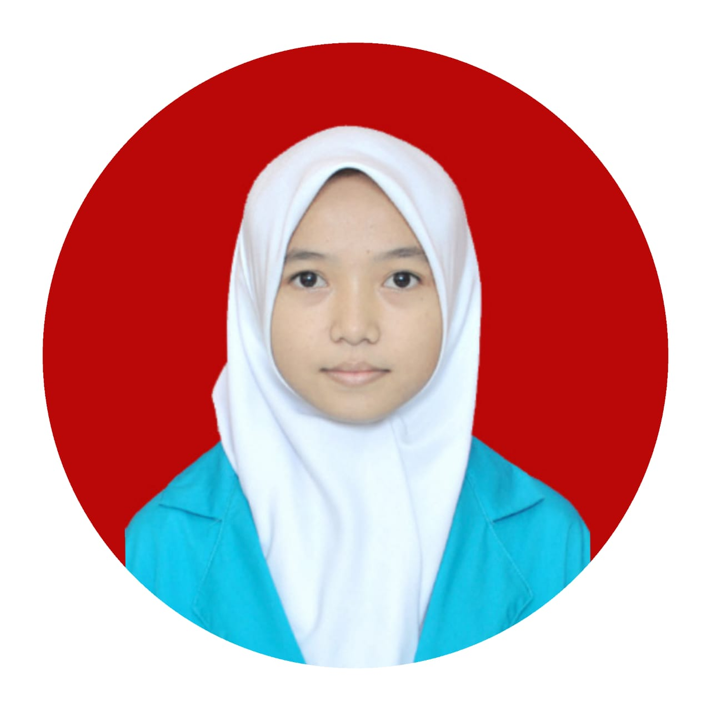

|  |
NURMILA FAUZIYAH
Jakarta, 09 Januari 2003 | Wanita | Belum Menikah | Islam | TB:155cm | BB:40kg
Pondok-Pinang, Keb.Lama, Jakarta Selatan, Indonesia. 12310
Email : Nurmilafauziyah31@gmail.com || No. Telp : +62 813 1651 0883
|
| TENTANG SAYA |
| Lulusan Sekolah Menengah Kejuruan di bidang Akuntansi Keuangan dan Lembaga yang memiliki ketertarikan besar di bidang keuangan bisnis, administrasi, teknologi dan komunikasi. Memiliki pengalaman magang di salah satu perusahaan air minum terbesar di Indonesia. Ahli dalam mengoperasikan berbagai software keuangan dan administrasi serta menguasai beberapa bahasa pemograman. Sedang menjalani studi perkuliahan di sebuah Sekolah Tinggi Teknologi di jurusan Sistem Informasi sebagai mahasiswa penerima beastudi full sampai lulus. |
| PENDIDIKAN |
SMK NEGERI 18 JAKARTA | 2018-2021
Jurusan Akuntansi Keuangan dan Lembaga (AKL)
- Top 3 murid dengan nilai terbaik selama kelas 10-12
- Ekstrakulikuler : Tari Ratoeh Jaroe (2018-2021)
- Prestasi : Juara 2 Tari Ratoeh Jaroe Hilo Competition (2018), Juara Harapan 1 Lomba Tari Ratoeh Jaroe di SMK Negeri 2 Depok (2019)
SEKOLAH TINGGI TERPADU NURUL FIKRI | 2021-sekarang
Jurusan Sistem Informasi (SI)
- Mahasiswa pemegang beastudi full 100%
- IT Club : Mudeng
|
| PENGALAMAN MAGANG |
PT TIRTA INVESTAMA – DEPO CIPUTAT
Supply Chain - Magang | 6 Januari 2020 – 10 Maret 2020
- Berkontribusi dalam pemantauan kinerja keuangan koperasi perusahaan lewat pembuatan rekapan ratusan data transaksi dan laporan keuangan secara terperinci.
- Bertanggung jawab dalam kelancaran operasional administrasi operasional administrasi perusahaan lewat input dan intergrasi data tepat waktu.
- Berhasil mengorganisir letak penyimpanan lebih dari 20 data customer demi menciptakan kerapihan dan visual yang baik setiap hari.
|
| AKTIVITAS DAN KEPEMIMPINAN |
WAKIL KETUA | 2020-2021
Ekstrakulikuler Tari Ratoeh Jaroe SMK Negeri 18 Jakarta
- Membantu ketua dalam membuat dan menjalankan program jangka pendek dan jangka panjang demi kemajuan ektrakulikuler.
- Berhasil membawa nama sekolah dengan menggerakan >40 anggota ektrakulikuler untuk mengikuti lomba di berbagai tingkatan kompetisi tari tradisional.
- Bertanggung jawab melakukan pengawasan jalannya ektrakulikuler berdasarkan rencana kerja dan ketentuan yang berlaku serta melaporkan hasil pengawasan tersebut
kepada ketua.
|
| KEMAMPUAN |
- Microsoft Office - Advanced
- Accounting - Advanced
- HTML,CSS - Beginner
- Python - Beginner
- Bahasa Indonesia - Advanced
- Bahasa Inggris - Intermediate
|
|